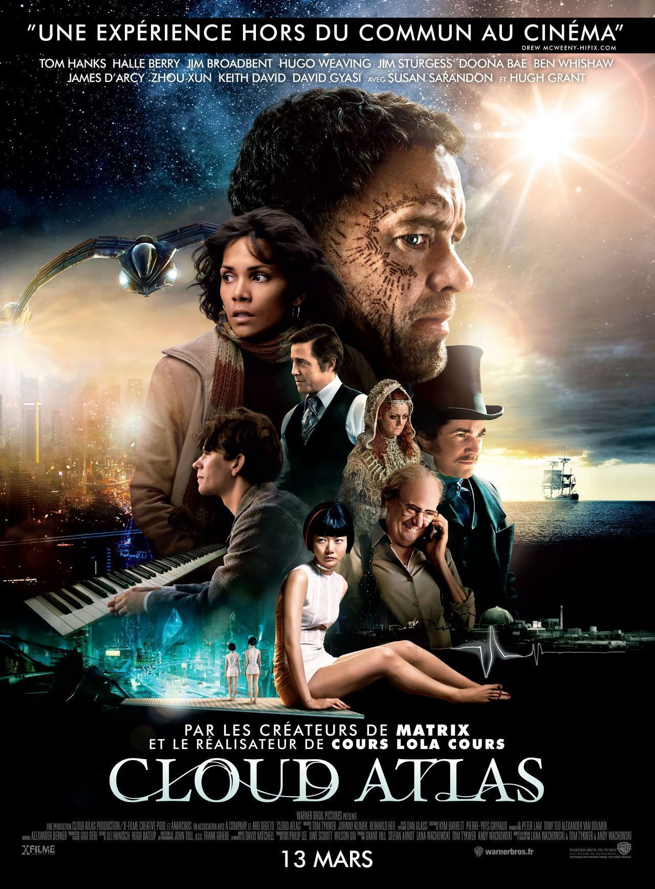
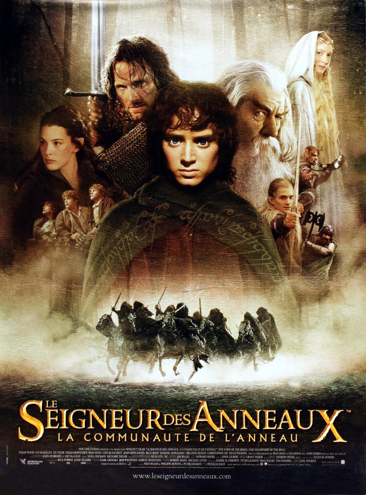

Arnaud APRAHAMIAN
Etudiant à Le Wagon
Après 3 année en liscence, j'ai finalement decide de me lancer directement dans le monde profesionel. Le Wagon c'est presenté comme étant le meilleur tremplin pour bien demarrer.
Rendez-visite au WagonMes films favoris

|
Dead PoolDeadpool, est l'anti-héros le plus atypique de l'univers Marvel. À l'origine, il s'appelle Wade Wilson : un ancien militaire des Forces Spéciales devenu mercenaire. Après avoir subi une expérimentation hors norme qui va accélérer ses pouvoirs de guérison, il va devenir Deadpool. Armé de ses nouvelles capacités et d'un humour noir survolté, Deadpool va traquer l'homme qui a bien failli anéantir sa vie. |
|  |
Cloud AtlasÀ travers une histoire qui se déroule sur cinq siècles dans plusieurs espaces temps, des êtres se croisent et se retrouvent d’une vie à l’autre, naissant et renaissant successivement… Tandis que leurs décisions ont des conséquences sur leur parcours, dans le passé, le présent et l’avenir lointain, un tueur devient un héros et un seul acte de générosité suffit à entraîner des répercussions pendant plusieurs siècles et à provoquer une révolution. Tout, absolument tout, est lié. |
|  |
Le Seigneur des Anneaux - La Communeauté de l'AnneauxLe jeune et timide Hobbit, Frodon Sacquet, hérite d'un anneau. Bien loin d'être une simple babiole, il s'agit de l'Anneau Unique, un instrument de pouvoir absolu qui permettrait à Sauron, le Seigneur des ténèbres, de régner sur la Terre du Milieu et de réduire en esclavage ses peuples. À moins que Frodon, aidé d'une Compagnie constituée de Hobbits, d'Hommes, d'un Magicien, d'un Nain, et d'un Elfe, ne parvienne à emporter l'Anneau à travers la Terre du Milieu jusqu'à la Crevasse du Destin, lieu où il a été forgé, et à le détruire pour toujours. Un tel périple signifie s'aventurer très loin en Mordor, les terres du Seigneur des ténèbres, où est rassemblée son armée d'Orques maléfiques... La Compagnie doit non seulement combattre les forces extérieures du mal mais aussi les dissensions internes et l'influence corruptrice qu'exerce l'Anneau lui-même. |